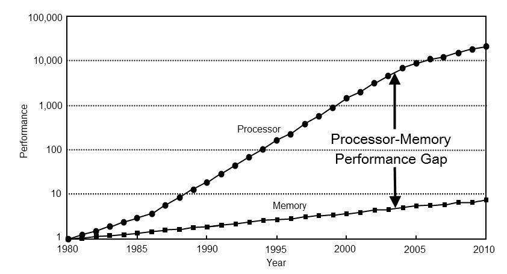

Methodology¶
The benchmark measures how reordering changes SpMV behavior. The central operation is:
y = A * x
where A is stored as CSR and comes from a SuiteSparse Matrix Market file.
CSR Execution Model¶
The parser reads .mtx files into COO and converts them to CSR. CSR is a natural
baseline for row-wise SpMV:
for row in rows:
for idx in row_ptr[row] .. row_ptr[row + 1]:
y[row] += values[idx] * x[col_idx[idx]]
The expensive part is usually not the multiply-add itself. The irregular access
to x[col_idx[idx]] can stress cache and TLB behavior, especially for matrices
with wide bandwidth or graph-like sparsity.

Reordering Methods¶
The benchmark compares the original matrix ordering against:
| Method | Intent |
|---|---|
| RCM | Reduce matrix bandwidth and improve locality for some sparse patterns |
| AMD | Reduce fill-oriented graph structure; useful as a structural ordering baseline |
| ND | Partition graph structure using nested dissection |
The reordered matrix is constructed as:
A' = P A P^T
The SpMV input is transformed consistently so correctness is preserved:
y' = A' (P x)
y = P^T y'
Timing Methodologies¶
The project records three timing variants:
| Methodology | Purpose |
|---|---|
| RAx | Repeated A * x; captures steady-state behavior |
| IOs | Swaps input/output vectors between iterations |
| Cold | Attempts to reduce warm-cache bias |
These methodologies help distinguish real reordering benefits from measurement artifacts caused by cache warmup or reused vector state.
Structural Metrics¶
The main benchmark also records matrix-level properties:
- number of rows/columns
- nonzeros
- average and standard deviation of nonzeros per row
- maximum and average bandwidth
- load imbalance estimate
- density
These metrics make it possible to compare performance against matrix structure, not just against matrix names.
Counter Measurements¶
Two additional binaries measure hardware-counter behavior:
| Binary | Purpose |
|---|---|
bin/spmv-benchmark-cache |
L1/L2/L3 cache miss counters where available |
bin/spmv-benchmark-tlb |
DTLB and ITLB miss counters where available |
Counter data is collected separately from the timing pipeline because PAPI event availability and overhead differ by platform.